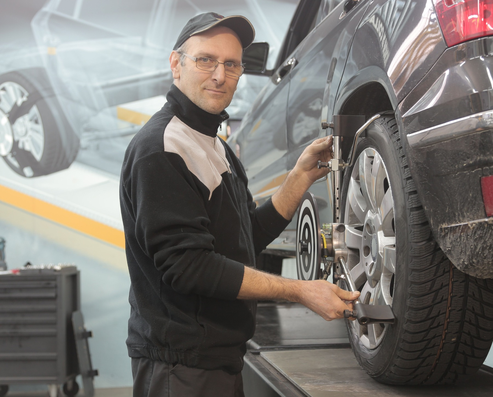
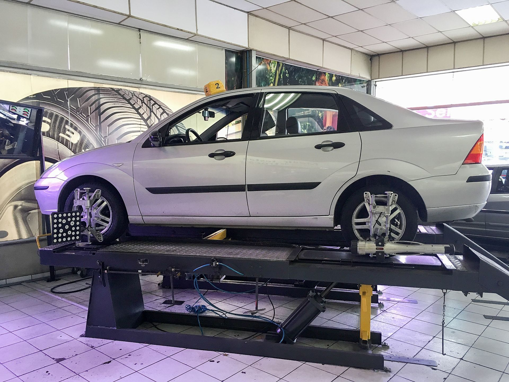
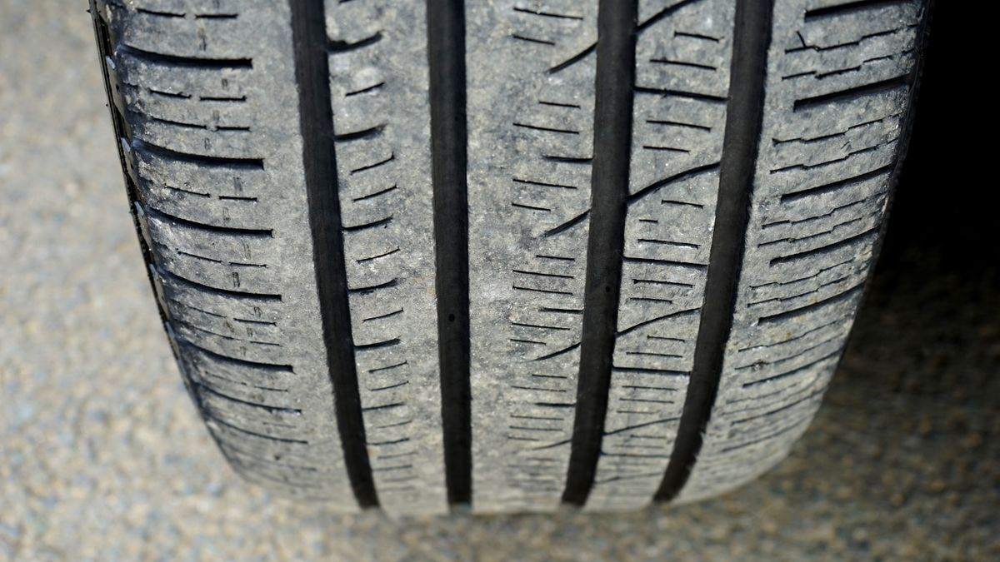

Featured / 35–50 min*
Computerised wheel alignment
Measured wheel angles, clear symptoms and adjustment guidance for straighter tracking.
Alignment detailsMulti-brand tyres, careful fitment and computerised alignment—explained clearly and handled without fuss.
From a quick puncture check to full wheel geometry, every job starts with the actual condition of your vehicle.

Measured wheel angles, clear symptoms and adjustment guidance for straighter tracking.
Alignment details*Indicative workshop time; vehicle condition and queue can affect turnaround.
Availability varies by size and vehicle. We help compare suitable options without pretending one brand fits every driver.
Alignment is worth checking when the car pulls, the steering sits off-centre or tread wear differs across the tyre.

Tell us the symptom, vehicle and service needed.
We look at tyres, pressure and relevant wheel condition.
The agreed workshop service is completed with suitable equipment.
We review pressure, visible condition and service result.
Look for wear indicators, cracking, repeated pressure loss, sidewall damage and uneven tread. A visible sign is a reason to inspect—not a remote diagnosis.

Mon–Sat 8:30 AM–7:30 PM · Sunday 9:00 AM–5:00 PM. Call ahead or choose an appointment window.